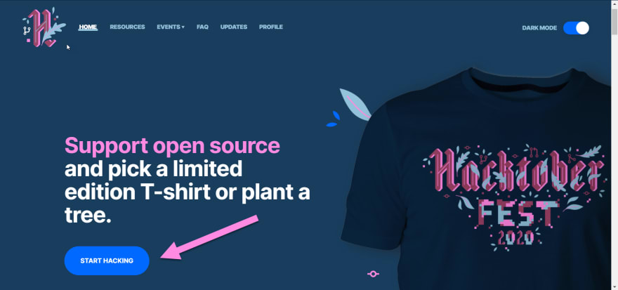
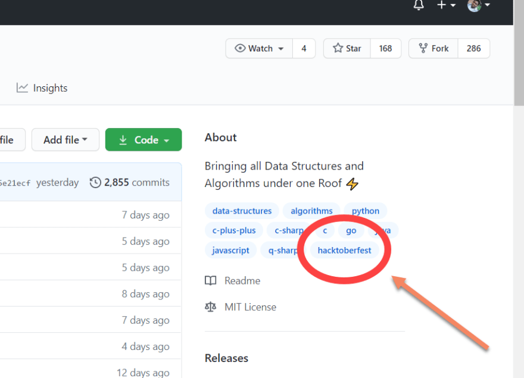

What is Hacktober Fest and Why should you care for it as a Beginner?
If you want to contribute to open source projects and don’t know where to start, Hacktoberfest is the perfect opportunity for you. Level Zero has taught us enough alredy to be able to contribute to this Hackathon. Therefore, in this blog I have curated the necessary points and some resources we might need to start hacking as beginners.
Hacktoberfest is a month long, annual global hackathon event hosted by DigitalOcean and GitHub to bring developers from all sorts of level and profession together and contribute to open source projects and to support the open-source community.
Participants also win awesome swag like the free limited edition T-shirts and awesome stickers.
Anyone can participate in Hacktoberfest & it is not at all mandatory to have any experience or expert knowledge in coding.
What can I contribute?
-
Code - The most obvious way to contribute to a project is coding. However, you don't have to be a professional programmer or Mr Robot to help open source community. Level 0 has made us able enough to contribute our bit
-
Design -If you have an eye for good ui/ux and cannot help with the logic of the code,you can definately do design. You can also help by designing or redesigning project assets like animations, landing pages, UI or illustrations,copywriting etc. Possibilities are endless here!
-
Review - You can also help by checking the project code & can suggest better ways of implementing the same logic, refactoring the code or helping the owner to find & fix bugs in the project
-
Documentation - One of the easiest yet important way of contributing to a project is to add documentation to the project or help improve the current documentation.
How can I contribute?
Step 1 - Register yourself for Hacktoberfest Step 2 - Find repositories to make contributions
Find a repository of your choice which matches your skill set, it could be any repository on GitHub labelled as hacktoberfest. If the label is not present, it means that any contributions you make to this particular repository will not be counted for Hacktoberfest 2020
 Here are some of the repositories I found for beginners:- TesseractCoding/NeoAlgo
- jeongwhanchoi/hacktoberfest-for-beginners
- surajsrv11/JavaScript
- mekowalski/hacktoberfest-beginner
- api-platform/api-platform
- firstcontributions/first-contributions
Step 3- Start Hacking / Contributing
-
Throughout the month of October, you have to make at least 4 valid pull requests in any repository on GitHub which is labelled hacktoberfest . here is tanay guide to making pull requests.
-
The pull requests you have made will have to go through a review process of 14 Days. You can check the status of your pull requests from here.
-
Within that 14 Day review process, the repository owner will have a chance to see & evaluate your pull requests, if everything goes well & all 4 of your pull requests got accepted then after 14 days you will receive an email from Hacktoberfest organizers to claim your prize.
-
Even if your pull requests aren’t accepted, they should still count toward your 4 pull requests necessary to earn the shirt. The only exception would be if the project maintainer chooses to mark your pull request as “invalid”. They may do this if they perceive your pull request to be low effort, or if it contains plagiarism.
-
We should make as many contributions as we can on multiple repositories, as this will increase the number of pull requests we have made & eventually your chances of completing Hacktoberfest 2020 challenge will increase as well.